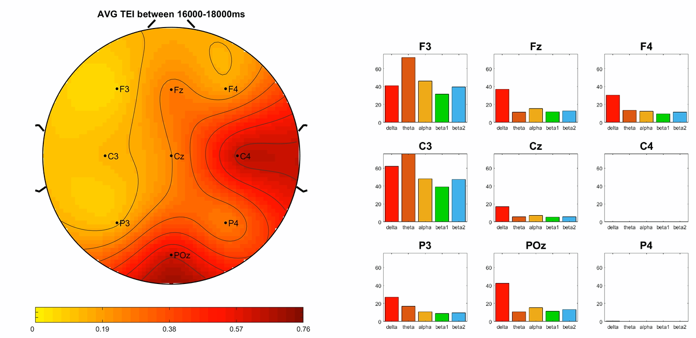
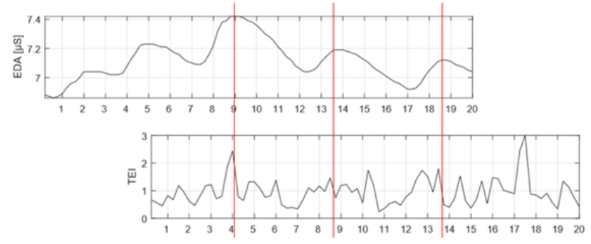
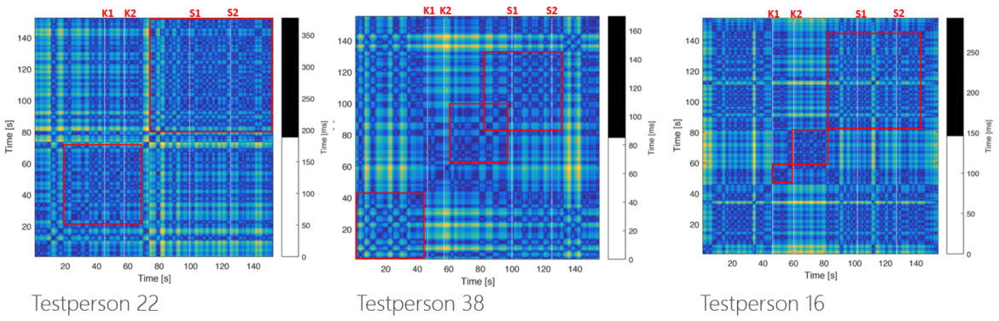

AdAnalyser
-
Problemstellung
- Delta: Tiefer Schlaf/Hypnose
- Theta: Tiefenentspannung / Tagträumen / Zugang zur Erinnerung
- Alpha: Entspannung / Schläfrigkeit / phasenweise Blockierung von Informationen, die von außen kommen / Wachsamkeit / allgemeine unkonzentrierte Wachsamkeit
- Beta 1: Fokussierte Aufmerksamkeit
- Beta 2: Übererregung, Panik und Angst
- Gamma: Bindungsprozesse zwischen verteilten Zellarrayss
- Kahneman, Daniel: Schnelles Denken, langsames Denken. München : Siedler, 2012. - ISBN 978-3-88680-886-1
- Adams and Victor's Principles of Neurology, Allan H. Ropper, Martin A. Samuels, Joshua P. Klein, 10th Edition, McGraw-Hill Education, ISBN 978-0-07-1794 79-4
- Berka C, Levendowski DJ, Lumicao MN, Yau A, Davis G, Zivkovic VT, Olmstead RE, Tremoulet PD, Craven PL. EEG correlates of task engagement and mental workload in vigilance, learning, and memory tasks. Aviat Space Environ Med 2007; 78(5, Suppl.): B231-44.
- Mikulka PJ, Scerbo MW, Freeman FG. Effects of a biocybernetic system on vigilance performance. Hum Factors 2002 Winter; 44:654-64.
- Prinzel LJ, Freeman FG, Scerbo MW, et al. A closed-loop system for examining psychophysiological measures for adaptive task allocation. lnt J Aviat Psychol 2000; 10:393-410.
- Mikulka PJ, Scerbo MW, Freeman FG. Effects of a biocybernetic system on vigilance performance. Hum Factors 2002 Winter; 44:654-64
- Freeman FG, Mikulka PJ, Scerbo MW, Scott L. An evaluation of an adaptive automation system using a cognitive vigilance task. Biol Psych 2004; 67:283-297
- Prinzel LJ, Freeman FG, Scerbo MW, et al. Effects of a psychophysiological system for adaptive automation on performance, workload, and the event-related potential P300 component. Hum Factors 2003; 45:601-13
- Mesbah M, Balakrishnan M, Colditz PB, Boashah B. Automatie seizure detection based on the combination of newborn multi-channel EEG and HRV information.EURASIP Journal on Advances in Signal Processing, 2012:215 ff.
- Onton J, Westerfield M, Townsend J, Makeig S. lmaging human EEG dynamics using independant component analysis. Neuroscience and Biohavioural Reviews, 30, 2006: 808-822
- nalysis. Neuroscience and Biobehavioral Reviews, 30,
- Posner MI, Rothbart MK. Research on attention networks as a model for the integration of psychological science. Annu. Rev. Psychol. 2007. 58:1-23
- Borghini G, Astolfi L, Vecchiato G, Mattia D, Babiloni F. Measuring neurophysiological signals in aircraft pilots and car drivers for the assessment of mental workload, fatigue and drowsiness. Neurosci. Biobehav. Rev. (2012)
- Larsen EA. Classification of EEG signals in a BrainComputer Interface system. Master of Science in Computer Science, 2001. Norwegian University of Science and Technology, Department of Computer and Information Science
- Tan BA. Using a Low-cost EEG Sensor to Detect Mental States. Thesis Paper, School of Computer Science Department Carnegie Mellon University Pittsburgh, PA. 2012
Im neurowissenschaftlichen Sprachgebrauch wird der Teil des Gehirns, der intuitiv, d.h. unbewusst, funktioniert, als System 1 bezeichnet, während der bewusstere und logisch orientierte Teil des Gehirns wird als System 2 bezeichnet[1]. In ihren bewussten Zuständen (System 2) verarbeiten unsere Gehirne nur 40 Bit pro Sekunde, in unterbewussten Zuständen (System 1 ), sie sind in der Lage, 11 Millionen Bits pro Sekunde zu verarbeiten)[2]. Die Zahlen sind ungefähre Angaben und sollten nicht zu wörtlich genommen werden. Der wichtigste Punkt, der jedoch beachtet werden muss, ist der sehr signifikante Unterschied zwischen die Verarbeitungskapazität in seinen bewussten (System 2) und unterbewussten (System 1) Zuständen. Die meisten traditionellen Marktforschungstechniken konzentrieren sich darauf, die artikulierten Reaktionen der Verbraucher - im Wesentlichen die bewussten Reaktionen des Systems 2 - zu erfassen zur Fernsehwerbung. Was sie jedoch tun sollten, ist auf die Antworten von System 1 zuzugreifen, die zu mehr als 90 Prozent unserer Entscheidungsfindung. Heutzutage wird die Werbe- und Marketingbranche zunehmend aufmerksamer wird auf die Bedeutung der unbewussten Einflüsse von System 1 auf die Entscheidungsfindung Verbrauchern. Der Erkenntnishunger danach, die Reaktionen des Gehirns der Verbraucher zu verstehen, wird durch den wissenschaftlichen Fortschritt auf dem Gebiet der Neurowissenschaften flankiert. Innovationen ermöglichen effektives Verständnis der Dynamik von System 1 und bieten die Möglichkeit, Gehirnreaktionen zu erfassen. Die Elektroenzephalographie ist derzeit neben der fMRI (funktionelle Magnetresonanztomographie) eine der gefragtesten Technologien in diesem Bereich, mit ihren einfachen und nicht-intrusiven Mitteln zur Erfassung von System-1-Reaktionen. Darüber hinaus werden neue Techniken und Geräte entwickelt, um System-1-Antworten auf der Grundlage von EEG-Daten besser zu verstehen und zu verstehen. Unabhängige Marktforschung Unabhängige Martkforschungsinstitute sind neben der Forschung für die Entwicklung neurowissenschaftlicher Ansätze in diesem Bereich.
AdAnalyser Ansatz
Bei AdAnalyser handelt es sich im Wesentlichen um eine Methode in Form einer Software zur Auswertung von
Reaktionen auf Werbungsstimuli aller Art (TV Werbung, Anzeigenwerbung, etc.).
Die Software kombiniert Reaktionen auf Werbe- und andere Reize mit fortschrittlichen
neurowissenschaftlichen Techniken, EEG, HRV, EDA und Eye-Tracking. Dies ermöglicht ein detailliertes Verständnis
des Arousals und des Engagements der Befragten mit einer Werbung und damit auch rückschließend ihrer Wirksamkeit.
Im Projekt verwenden wir ein mobiles ABM 9-Kanal-EEG-Gerät mit einer zeitlichen Auflösung von 256Hz, um
elektroenzephalographisch basierte Gehirn-Zustände aufzunehmen.
Über eine Kombination mit weiteren psycho-physiologischen Signalen lassen sich Stärken und Schwächen
einer Werbung punktuell messen und Änderungen vornehmen.
Um das Angebot weiterzuentwickeln und die laufende und zukünftige Glaubwürdigkeit zu untermauern,
führen wir eine umfassende Entwicklung und Bewertung der Software, die eine sekundengenaue Klassifikation
des zerebralen sowie des vegetativen Zustands liefert, durch, um Reaktionen auf Werbespots aller Art auszuwerten.

Das EEG ist eine adäquates Mittel zur Überwachung dynamischer Fluktuationen kognitiver Zustände, des Task Engagements und der kognitiven Belastung (cognitive load). Die zeitliche Auflösung des EEGs ermöglicht Präzisionsberechnungen als halbsekündlicher bzw sekündlicher Basis. Die Validierung und Interpretation von Veränderungen in einem kognitiven Zustand auf einer sekundengenauen Basis wird durch die Verwendung eines Multi-Array-Gerätes ermöglicht [3] Gemäß internationalen Standards kann das EEG grob gemäß der folgenden Bänder klassifiziert werden:
Das Betaband ist in zwei oder mehr Unterbänder teilbar, die jeweils unterschiedliche Funktionen widerspiegeln, wenn ein Stimulus vom Gehirn wahrgenommen und verarbeitet wird. Dies sind nur einige der verstandenen Funktionen von Frequenzbändern bei der internen Kommunikation im Gehirn. Für die Analyse von Werbestimuli werden nur die Bänder Delta, Theta, Alpha, Beta 1 und Beta 2 als relevant betrachtet. Da diese jedoch nicht ausreichen, um Hirnzustände bzw. Aufmerksamkeit aufgrund von Werbereizen zu kategorisieren, wurde in einer interessanten Studie der NASA der sogenannte Task Engagement Index eingeführt (TEI von Prinzel et al. [4,5]]).
Task Engagement Index der NASA
Der Task Engagement Index (TEI) der NASA wurde ursprünglich in Flugsimulatoren zur Ausbildung von Piloten verwendet. Der TEI gibt den Grad der Auseinandersetzung mit externen Reizen an und misst das Stressniveau, das beim Umgang mit verschiedenen Szenarien erlebt wird. Sie entwickelten einen EEG-Engagement-Index, basierend auf der Leistung im Beta-Band(13-22 Hz) geteilt durch die Leistung des Alpha-Bandes(8-12 Hz) plus der des Theta-Bandes(5-7 Hz)[6,7,8].  
Einkanal- vs. Mehrkanal-EEGs
In den meisten EEG Veröffentlichungen wird deutlich, dass eine Mehrkanal-Leitfähigkeit typischerweise die
elektrische Aktivität im Gehirn misst. Ein Satz von Elektroden, von 1 bis 128 an der Zahl, liefert Informationen
darüber, wie das Gehirn eine konkrete Situation oder Stimuli reflektiert und verarbeitet. Es gibt seit langem eine
Debatte darüber, wie viele Elektroden für die räumliche Auflösung mindestens erforderlich sind, um einen
aufschlussreichen Einblick in die Reizverarbeitung des Gehirns zu liefern[9,10].
Bei der Beurteilung von Hirnprozessen, die mit Aufmerksamkeit assoziiert sind, können zum Beispiel die frontalen
und/oder präfrontalen Areale die besten Stellen sein, an denen die Elektroden zur Messung der Aktivität platziert
werden können[11].
Literatur zu bestehender Forschung zeigt eine starke Korrelation zwischen der Anzahl der verwendeten Elektroden
und der Vollständigkeit eines konkreten Forschungsprojekts. In der Anfangsphase wird meist ein Mehrkanalsystem verwendet, das im Laufe des Projekts aus Bequemlichkeitsgründen
zu einem Einkanalgerät wird[12]. Mit AdAnalyser unterstützen wir sowohl mobile 1-Kanal EEG Hedsets (z.B. von Neurosky),
2/3-Kanal-Hedsets von Emotiv als auch professionelle 9-Kanal-EEGs von ABM.
In den letzten Jahren ist eine Reihe von Einkanal-EEG-Geräten auf den Markt gekommen, meist in der Hoffnung, dass
EEG wird zu einem Maß für verschiedene Zustände der Aufmerksamkeit und wird bei verschiedenen Aufgaben eingesetzt,
die die Kontrolle über externe Systeme erfordern (cognitiv game controller und apps). Angesichts hoher Produktionsvolumina
sind diese Einkanalgeräte tendenziell preisgünstig und bieten relativ einfache Möglichkeiten zur Messung der Hirnaktivität.
Vor allem jüngere Wissenschaftler aus dem Bereich des HCI und der Informatik haben damit begonnen, diese Geräte auf
ihr wissenschaftliches Potenzial im Bereich der kognitiven Neurowissenschaften hin zu untersuchen[12,13].
Die Ergebnisse lassen sich vom Github repository direkt herunterladen. AdAnalyser - GitHub Repository
Referenzen